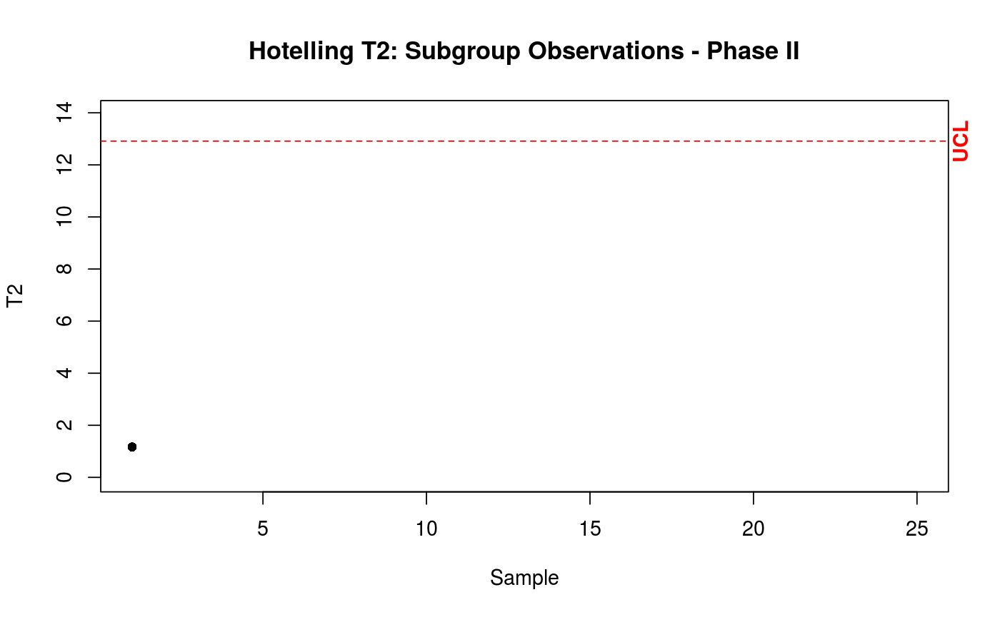

Phase II Hotelling Control Chart.
Builds the sub group phase II Hotelling control chart.
cchart.T2.2(T2II, m, n, j, t, p, datum = NULL, stats = NULL, T2 = NULL)
Arguments
| T2II | A vector with the value of T2 statistic for one sample. |
|---|---|
| m | The number of samples generated previously in data.1. |
| n | The size of each sample used previously in data.1. If they are individual observations, use n = 1. |
| j | The index of the current sample. |
| t | The maximum value of the x axis. |
| p | The dimension used previously in function data.1. |
| datum | The data set used in phase I. |
| stats | The auxiliary statistics created by the function stats. |
| T2 | The Hotelling T2 statistic for multivariate observations at phase I created by the function T2.1. |
Value
Return a control chart.
Details
It builds the Hotelling T2 control chart for multivariate normal data to be used in the operational phase (known as phase II); the control limits are based on the F distribution.
References
Montgomery, D.C.,(2008). "Introduction to Statistical Quality Control". Chapter 11. Wiley
See also
Examples
mu <- c(5.682, 88.22) Sigma <- symMatrix(c(3.770, -5.495, 13.53), 2) datum <- data.1(20, 10, mu, Sigma) estat <- stats(datum, 20, 10, 2) datum2 <- data.2(estat, 10, p = 2) T2II <- T2.2(datum2, estat, 10) # For the first sample j = 1. T2II is a vector with the value of the firts T2 statistic. cchart.T2.2(T2II, 20, 10, 1, 25, 2)# Same of the above, but now showing the phase I data set. cchart.T2.2(T2II, 20, 10, 1, 25, 2, datum = datum)#Example with individual observations datum <- data.1(50, 1, mu, Sigma) estat <- stats(datum, 50, 1, 2) datum2 <- data.2(estat, 1, p = 2) T2II <- T2.2(datum2, estat, 1) # For the first sample j = 1. T2II is a vector with the value of the firts T2 statistic. cchart.T2.2(T2II, 50, 1, 1, 25, 2)# Same of the above, but now showing the phase I data set. cchart.T2.2(T2II, 50, 1, 1, 25, 2, datum = datum)